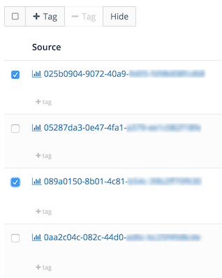
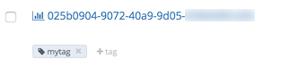

What is a Tag?
A tag is custom metadata that provides application-specific meaning to metrics and Wavefront entities: alerts, dashboards, events, and sources. Tags group together metrics and entities according to categories you define.
The primary use of tags is to limit the number metrics and entities you are querying or working with at once. Limiting the number of metrics reduces the time to run a query and the time to display the results. Limiting the number of entities reduces information overload.
This topic gives an overview of tags, decribes how to filter entities with tags, and add tags to entities.
Filtering in Queries
In queries, you can filter:
- Metrics with source and point tags
- Events with alert and event tags. In addition you can filter events with the system tags added by alerts: severity, subtype, and type.
Filtering Entities
In the Wavefront UI and API you can use entity tags to filter alert, dashboard, event, and source entities. In the Wavefront UI, entity tags display as gray labeled icons  in the filter bar and below each entity in the entity browser.
in the filter bar and below each entity in the entity browser.
Tag Summary
| Tag Type | Used in Queries | Where Added and Updated |
|---|---|---|
| alert | events() Basic events() Queries |
Wavefront UI and API Managing Alerts and Managing Maintenance Windows |
| dashboard | Wavefront UI and API Managing Dashboards |
|
| event | events() Basic events() Queries |
alerts - system tags Wavefront UI and API - entity tags Managing Events |
| point | ts() Wavefront Data Format and Using Point Tags |
Wavefront proxy Configuring Wavefront Proxy Preprocessor Rules Telegraf agent Wavefront CLI |
| source | ts() Getting Started with Wavefront Query Language |
Wavefront UI and API Managing Sources and Managing Maintenance Windows |
Tag Paths
All tag types support the ability to organize tags in a hierarchy. The hierarchy is defined by separating tag components with a dot ‘.’. For example: MyService.MyApp. Dashboards provided by Wavefront start with the tag path component wavefront..
Selecting and Searching Tag Paths
In the UI you operate on tag paths by selecting a component at a specific node in the hierarchy. For example, you can select all Wavefront dashboards by clicking wavefront, or only tutorial dashboards by expanding the wavefront node and selecting wavefront.tutorial.
In queries you achieve the same effect by using trailing wildcards “.*” when specifying tag paths. For example, to match all tags starting with alertTagPath., enter alertTagPath.*. This string matches alerts named alertTagPath.tpc1, alertTagPath.tpc1.tpc11, etc. When creating maintenance windows you can use tag paths and wildcards to put a group of of alerts in maintenance.
For a video overview, see Tag Paths.
Entity Tags
Entity tags are tags that apply to Wavefront entities: alerts, dashboards, events, and sources.
Adding Entity Tags
To add tags to one or more entities:
- Open an entity browser by selecting Browse > <entity>, where <entity> is Alerts, Dashboards, Events, or Sources.
- Choose which entities to tag:
- Check the checkboxes next to the entities and click the + Tag button.
-
Click +tag below an entity.

-
In the Add Tag dialog:

- Click the Create Tag button at the bottom:
- Type a tag name. Tag names can contain alphanumeric (a-z, A-Z, 0-9), dash (-), underscore (_), and colon (:) characters. Tag names are case sensitive. For example, the tags MyApp and myapp are stored as distinct tags. However, mixed case tag paths are collapsed into one path; MyService.myapp and myservice.myapp are collapsed into Myservice.myapp.
- Click Add.
- Click the Create Tag button at the bottom:
Searching for Entity Tags
When there are many tags you can search for tags by typing tag names in the Search box below the Tags heading in the filter bar:

As you type in the Search box, the list of tags below is filtered by the search string. When you search for tags, the search process is case insensitive. For example, searching for the tag myapp returns MyApp and myapp. Similarly, searching for the tag MyApp returns MyApp and myapp.
Filtering by Entity Tags
To filter by a tag, click a tag icon, for example  :
:
-
In the filter bar

-
Below an entity in the entity browser
